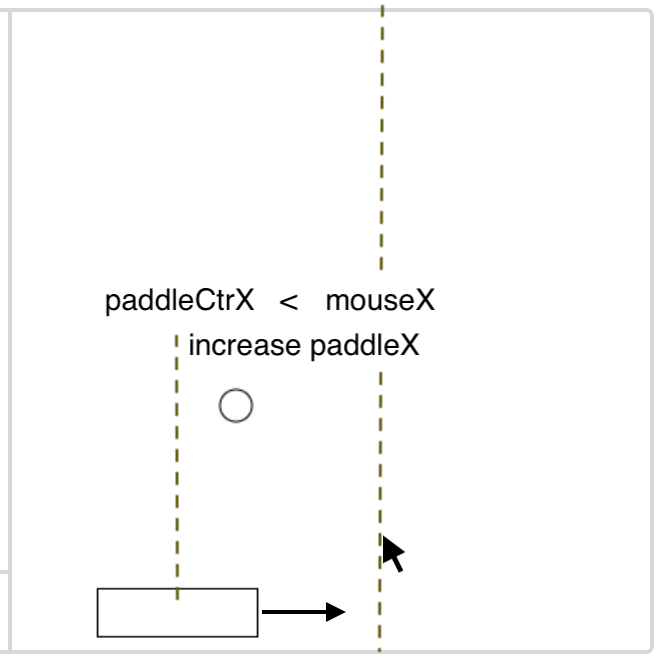
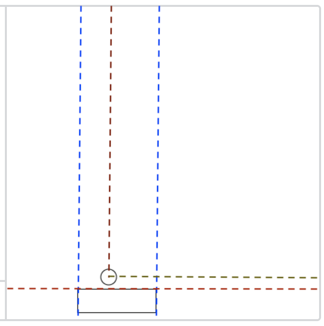

A classic, classic game!
For Coding 1, we're creating a 1-player pong game. The rules are as follows:
noLoop() to stop game// ball moves right if ballXSpd is positive
// and left if ballXSpd is negative
ballX += ballXSpd;
// When the right side of the ball is past
// the right side of the screen ...
if(ballX + ballRadius > width){
// We negate the x velocity, which causes
// it to bounce
ballXSpd=-ballXSpd;
}
Remember our "ball following the mouse" catalyst? This is the same concept!
In addition to testing the y postiion of the ball, you also need to ensure the ball is horizontally within the paddle
Two functions will help you immensely when figuring out how to pause and restart the game: loop() and noLoop()
noLoop() tells processing.js to pause the draw loop (stop making new frames). So the draw() function stops getting called.frameRate(0); (frameRate(0) doesn't to what you expect)mouseClicked(), will still get calledloop() is the opposite: it tells processing.js to resume the draw loop